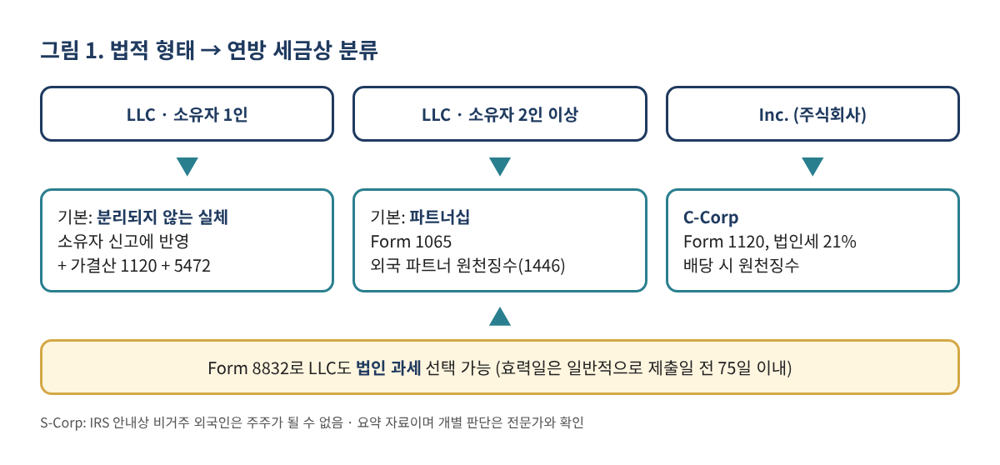
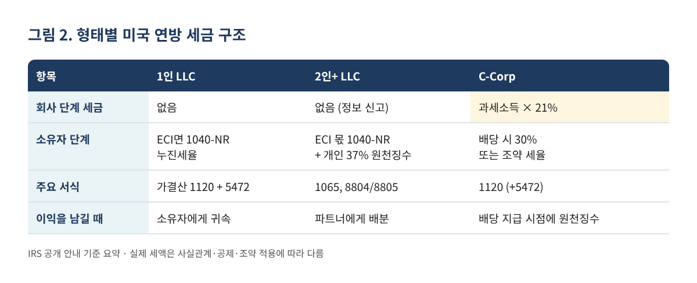
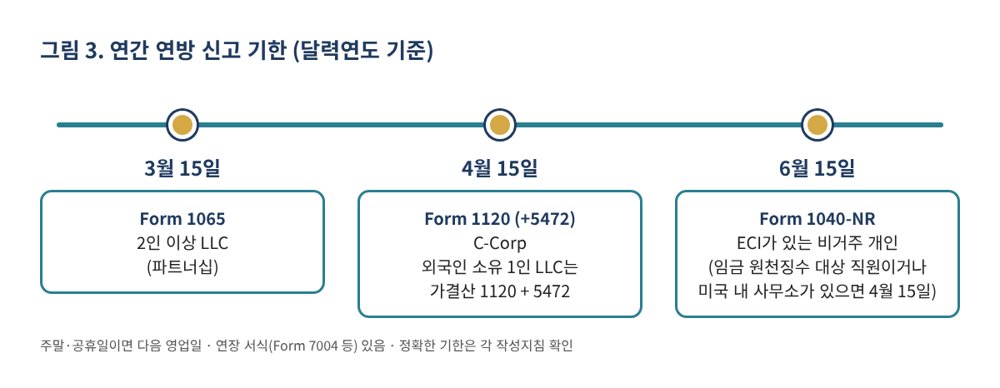

미국에 회사를 세우려는 한국 거주자가 가장 많이 묻는 질문 중 하나는 "LLC로 할까, C-Corp(주식회사)으로 할까"입니다. 두 형태는 설립 서류보다 미국 세금이 누구에게, 언제, 어떤 서식으로 부과되는지에서 크게 갈립니다. 이 글은 한국 거주 소유자 기준으로 미국 연방 세금 구조를 나란히 비교하고, 연간 신고 일정과 흔한 실수를 정리합니다. 한미 조세조약과 한국 측 세금은 개요만 다룹니다.
이 글은 일반적인 교육용 정보이며 세무·법률·재무 자문이 아닙니다.
이런 분께 필요합니다
· 한국에 살면서 미국 법인 설립을 검토 중인 분
· 이미 LLC를 세웠는데 C-Corp 과세 선택(Form 8832)을 고민하는 분
· 한국의 가족·지인을 도와 미국 회사 구조를 알아보는 재미 한인
LLC는 주(state) 법에 따라 만드는 법적 형태이고, 연방 세금에서 어떻게 취급되는지는 별도로 정해집니다. IRS 안내에 따르면 미국에서 설립한 LLC는 기본(default)으로 다음과 같이 분류됩니다.
참고로 IRS의 S Corporation 안내는 비거주 외국인이 S-Corp 주주가 될 수 없다고 설명합니다. 따라서 한국 거주자(미국 비거주 외국인)가 주주인 회사는 S-Corp을 선택할 수 없습니다.

LLC 자체는 연방 소득세를 내지 않고, 사업 결과가 소유자에게 귀속됩니다. 소유자가 비거주 외국인일 때 미국 세금이 생기는지는 주로 미국 내 영업(U.S. trade or business)을 하고 있는지와 그 소득이 실질적으로 관련된 소득(ECI)인지에 달려 있습니다. IRS는 미국 안에서 인적 용역을 수행하면 일반적으로 미국 내 영업에 해당하고, 활동이 상당하고 계속적이며 규칙적이어야 한다고 설명합니다. ECI는 공제 후 미국 시민·거주자와 같은 누진세율로 과세되며 Form 1040-NR로 신고합니다.
또한 외국인이 소유한 1인 LLC는 다른 소득세 신고 의무가 없더라도 Form 5472를 가결산(pro forma) Form 1120에 첨부해 제출해야 합니다. 자세한 내용은 이 시리즈의 Form 5472 글을 참고하시기 바랍니다.
파트너십은 Form 1065로 정보 신고를 하고 각 파트너에게 몫을 배분합니다. IRS는 미국 내 영업을 하는 파트너십의 파트너는 미국 내 영업을 하는 것으로 본다고 설명합니다. 또 파트너십은 외국 파트너에게 배분되는 ECTI(실질 관련 과세소득)에 대해 원천징수(Section 1446)를 해야 하며, IRS 안내상 개인 등 비법인 외국 파트너에 대한 세율은 37%, 법인 파트너는 21%입니다.
C-Corp은 회사가 납세자입니다. Form 1120 작성지침은 과세소득에 21%를 곱해 법인세를 계산하도록 안내합니다. 이후 회사가 한국 거주 주주에게 배당을 지급하면, 배당은 고정·정기 소득(FDAP)으로서 일반적으로 30% 또는 조세조약상 낮은 세율로 원천징수 대상이 됩니다. 주주는 보통 Form W-8BEN을 지급자에게 제출해 외국인 신분을 증명하고, 지급 내역은 Form 1042-S로 보고됩니다. 25% 이상 외국인 소유 미국 법인은 특수관계인과의 거래가 있으면 Form 5472도 제출해야 합니다.
| 항목 | 1인 LLC (기본) | 2인+ LLC (기본) | C-Corp |
|---|---|---|---|
| 연방 세금상 분류 | 분리되지 않는 실체 | 파트너십 | 법인 |
| 회사 단계 연방 소득세 | 없음 | 없음(정보 신고) | 과세소득 × 21% |
| 소유자 단계 | ECI면 1040-NR 누진세율 | ECI 몫 1040-NR + 37% 원천징수(개인) | 배당 시 30% 또는 조약 세율 |
| 주요 서식 | 가결산 1120 + 5472 | 1065, 8804/8805 | 1120 (+5472) |

| 서식 | 대상 | 기한 (달력연도) |
|---|---|---|
| Form 1065 | 2인 이상 LLC(파트너십) | 3월 15일 (종료 후 3번째 달 15일) |
| Form 1120 (+5472) | C-Corp | 4월 15일 (종료 후 4번째 달 15일) |
| 가결산 Form 1120 + 5472 | 외국인 소유 1인 LLC | Form 1120 기한과 동일 |
| Form 1040-NR | ECI가 있는 비거주 외국인 개인 | 4월 15일 또는 6월 15일 (임금 원천징수 대상 직원이거나 미국 내 사무소·사업장이 있으면 4월 15일, 그 외 일반적으로 6월 15일) |
기한이 주말이나 공휴일이면 다음 영업일로 넘어가는 규정이 있으며, 연장 신청 서식(법인은 Form 7004 등)도 있습니다. 개별 기한은 각 서식 작성지침에서 확인하시기 바랍니다.

한국에 사는 디자이너 김OO 씨(가상 인물)가 미국 고객을 상대로 "한빛디자인"을 운영하려 합니다. 아래 숫자는 이해를 돕기 위한 예시 값이며 실제 세액은 사실관계, 공제, 조약 적용 여부에 따라 달라집니다.
| 예시 값 / Sample values | C-Corp (Hanbit Design Inc.) |
|---|---|
| 연간 과세소득 | $100,000 |
| 법인세 (21%) | $21,000 |
| 세후 이익 | $79,000 |
| 전액 배당 시 원천징수 (법정 30% 가정) | $23,700 |
| 주주 수령액 (미국 측 기준) | $55,300 |
조세조약이 적용되면 배당 원천징수 세율이 낮아질 수 있으므로, 위 30%는 조약 적용 전 법정 세율을 가정한 것입니다. 배당 원천징수는 배당을 지급할 때 생깁니다. 이익을 회사에 남겨 두는 경우에 생길 수 있는 다른 과세 문제는 전문가와 확인하시기 바랍니다.
| 예시 값 / Sample values | 1인 LLC (Hanbit Design LLC) | 2인 LLC (지분 50:50) |
|---|---|---|
| 회사 단계 연방 소득세 | 없음 | 없음 |
| ECI인 경우 | $100,000을 1040-NR에 누진세율로 신고 | 1인당 몫 $50,000 |
| 파트너십 원천징수 (개인 37%) | 해당 없음 | 1인당 $18,500 |
| ECI가 아닌 경우 | 미국 소득세 과세 여부를 전문가와 확인 | 동일 |
| 매년 제출 | 가결산 1120 + 5472 | 1065, 8804/8805 등 |
이처럼 C-Corp은 회사 단계와 배당 단계에서 두 번 과세될 수 있지만 배당 원천징수는 배당을 지급하는 시점에 생기고, LLC는 회사 단계 세금은 없지만 ECI 여부에 따라 소유자가 직접 미국 개인 신고를 해야 할 수 있습니다. 어느 쪽이 유리한지는 미국 내 활동, 이익 규모, 배당 계획, 한국 측 과세에 따라 달라집니다.
한국 측 의무도 확인하세요
한국 거주자가 미국 회사를 소유하거나 미국 계좌를 보유하면, 한국 외국환거래 규정에 따른 해외직접투자 신고, 해외금융계좌 신고, 국세청에 대한 해외현지법인 자료 제출 등 한국 측 의무가 생길 수 있습니다. 기준 금액과 기한은 해마다 확인이 필요하므로 한국 세무사나 거래 은행에 확인하시기 바랍니다. 미국 회사 이익과 배당이 한국에서 어떻게 과세되는지도 한국 세무사와 확인해야 합니다.
IRS는 한국과의 소득세 조세조약 문서(1976년으로 표기)를 공개하고 있습니다. 조약은 배당·이자 등 일부 소득의 원천징수 세율을 낮추거나 이중과세 조정 방법을 정할 수 있지만, 적용 여부와 세율은 소득 종류와 요건에 따라 다릅니다. 조약 혜택을 받으려면 보통 W-8BEN 등으로 요건을 증명해야 합니다. 구체적인 적용은 미국 CPA·EA와 한국 세무사에게 함께 확인하시기 바랍니다.
LLC는 Form 8832로 법인 과세를 선택할 수 있습니다. 다만 효력일 제한이 있으므로 IRS 안내와 전문가 확인이 필요합니다.
Form 1120 작성지침은 국내 법인은 과세소득 유무와 관계없이 신고해야 한다고 안내합니다. 외국인 소유 1인 LLC도 Form 5472 제출 의무가 있을 수 있습니다.
FinCEN 현재 안내에 따르면 미국에서 설립된 회사는 BOI 보고 의무에서 면제됩니다. 외국에서 설립되어 미국 주에 등록한 회사는 대상일 수 있으니 FinCEN 페이지를 확인하시기 바랍니다.
ECI는 미국 내 영업과 관련된 소득에 생기며, IRS는 미국 내 인적 용역 수행 등을 판단 요소로 설명합니다. 사실관계에 따라 결론이 달라지므로 단정하지 말고 전문가와 확인하시기 바랍니다.
일률적인 답은 없습니다. 이익 규모, 배당 계획, 미국 내 활동, 조약 적용, 한국 측 과세에 따라 달라집니다.
면책 안내: 이 글은 일반적인 교육용 정보로, 특정인의 상황에 대한 세무·법률·재무 자문이 아닙니다. 세법, 세율, 서식, 기한과 기관의 정책은 바뀔 수 있으므로 IRS, FinCEN, 각 주 정부와 한국 정부 기관의 공식 자료를 직접 확인하시기 바랍니다. 실제 결정 전에는 미국 CPA·EA·변호사와 한국 세무사 등 자격 있는 전문가와 본인의 사실관계를 검토하시기 바랍니다.